Pěšky přes Tchaj-wan léto 2018
První tři dny na Tchaj-wanu a už je to dost pestré na jedno fotoalbum! Něco málo o tom, jak vypadá ta druhá Čína.
Tchaj-wan! Jsem konečně tady. Předchozí dvě letenky na Tchaj-wan mi propadly, vyměnil jsem je za čas s 睿. Takže tohle je můj třetí pokus dostat se sem. A země vypadá úplně jinak, než jsem si ji představoval. Oproti Japonsku nebo J. Koreji je najednou v každé ulici mnohem více zelené barvy!
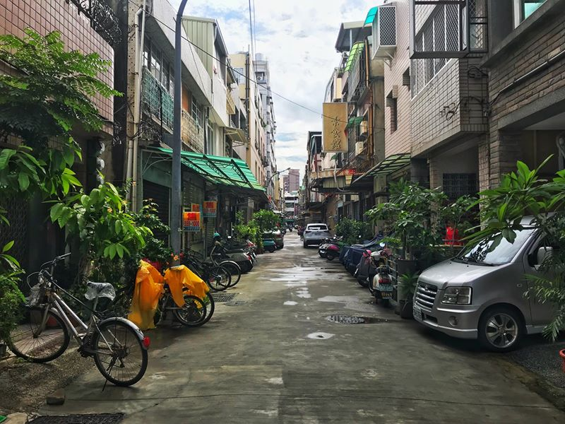
A také okolní stavby vypadají úplně jinak. Tyhle dva domy v Kao-siungu mě z nějakého důvodu fascinovaly.
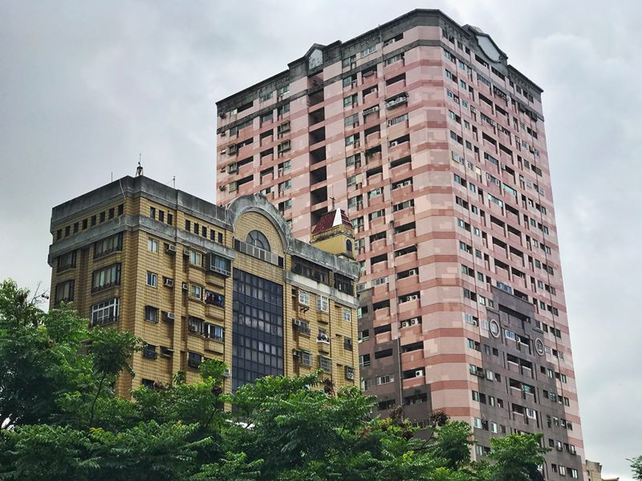
Nejvíce mi Tchaj-wan připomíná Vietnam, a to kvůli motorkám, které jsou všude. Stejně jako ve Vietnamu blokují chodníky, takže člověk musí neustále vcházet do silnice, což je dost nepříjemné a nebezpečné a stejně jako ve Vietnamu jezdí plnou rychlostí i po chodnících.

No a stejně jako ve Vietnamu, jsem viděl dopravní nehodu dvou motorek. Když jsem přicházel k přechodu pro chodce, přímo přede mnou se dvě motorky v plné rychlosti srazily. Zatímco muž vyvázl bez zranění, žena, která jela bez přilby, několik vteřin nehybně ležela na silnici a až pak se zvedla. Měla velké štěstí, že tohle přežila.
---
Lidi, vozte přilby! Nejen na motorce, ale i na kole. I já jsem jel jednou, dvakrát na motorce bez přilby. Byla to blbost a už to víckrát neudělám. Jedna Vietnamka mi říkala, že každý den vyjde minimálně jedna zpráva o tom, že se nějaký motorkář ze zahraničí na cestě zabil. Ty nehody na motorce jsou časté a přilba vás může zachránit.
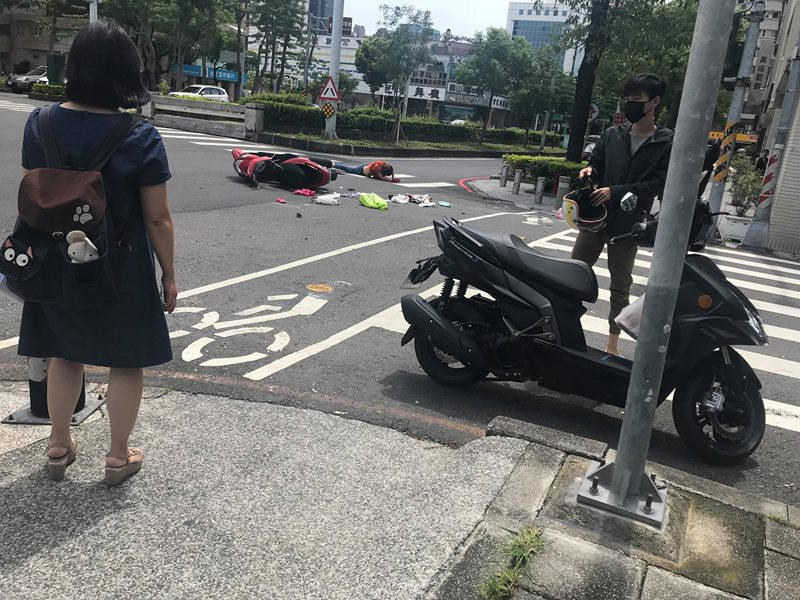
Jídelní lístky. Podobně jako v celé Asii, ani na Tchaj-wanu nemám tušení, co budu jíst. Tentokrát je to ale jednodušší, menu vyfotím, pošlu ho 睿, a ta, protože mě už zná, tak mi vybere jedno jídlo, které mi chutná. Je to vlastně mnohem lepší, než když vím, co to znamená, protože odpadá rozhodovací paralýza. Praktické, efektivní!
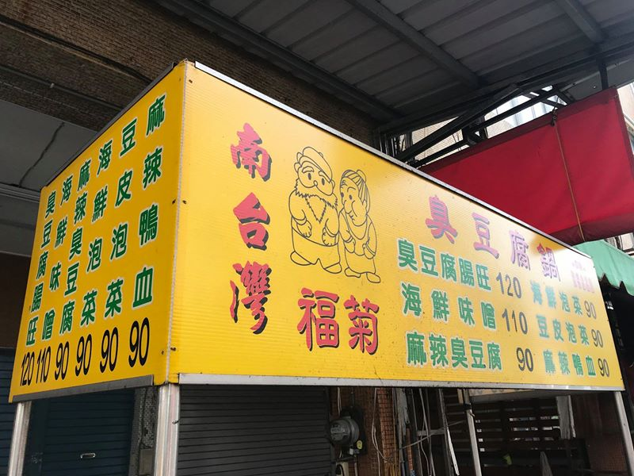
Asijská reklama na nizozemský Heineken.
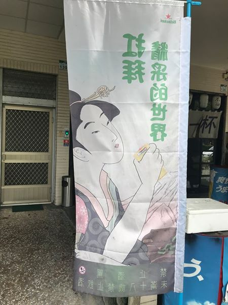
První noc večer jsem se byl podívat na Liuhe Night Market. Je to ulice s velkým množstvím stánků, které nabízejí mnoho pochutin, které 睿 zbožňuje a já bych je pozřel jen po měsíčním půstu, pokud by mi lékař řekl, že druhý den na 100% zemřu, jestliže je nesním.
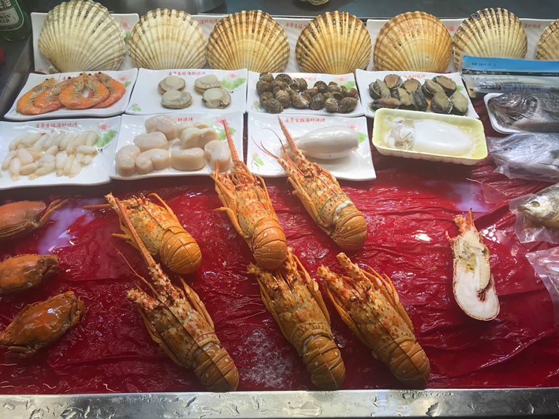
Druhý den v Kao-siungu jsem se byl podívat po okolí města. Třeba na pagody Draka a Tygra...
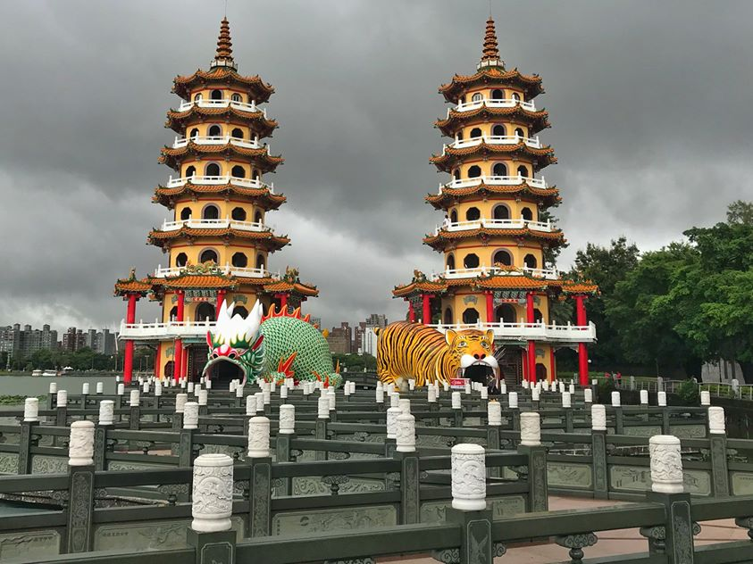
...a jen co jsem se k nim přiblížil, přišel za mnou Steve a řekl mi, že chci poznat někoho z daleka a že mě celou oblastí provede. A tak se mnou strávil cca 3 hodiny a prošli jsme vše v okolí. Steve mi popsal nejen Tchaj-wan sám, ale jako buddhista i vše kolem tchajwanského buddhismu.
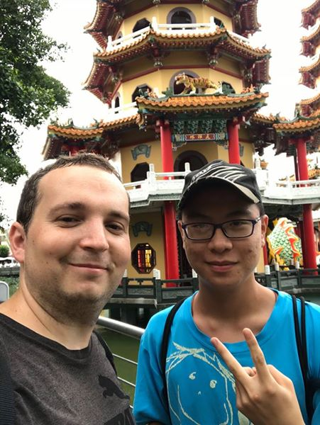
Jarní a Podzimní pavilony na Lotosovém jezeře...
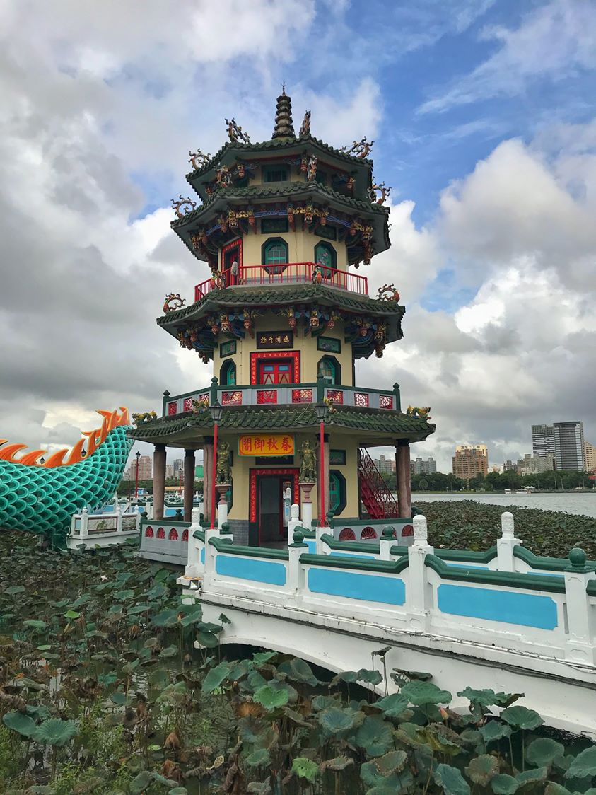
… a pavilony ještě z druhé strany.
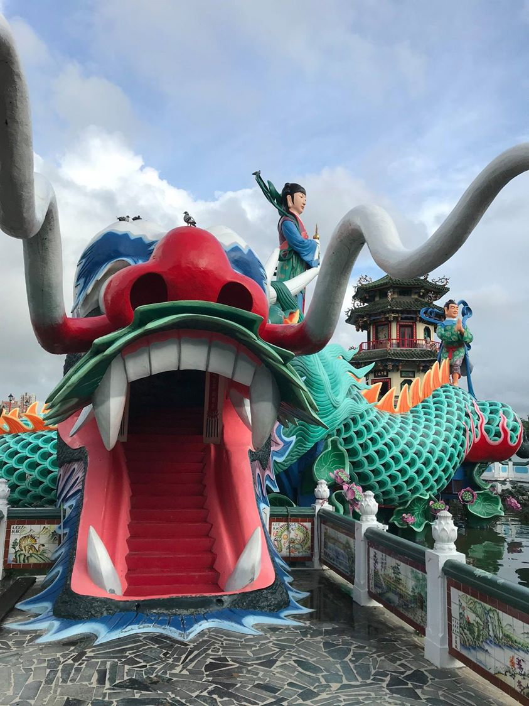
Věštba bohů. Zaplatíte 10 tchajwanských dolarů, žena odejde do chrámu, a vrátí se s věštbou, kterou vám předá. Pak už jen potřebujete čínskou přítelkyni, která věštbu přeloží.
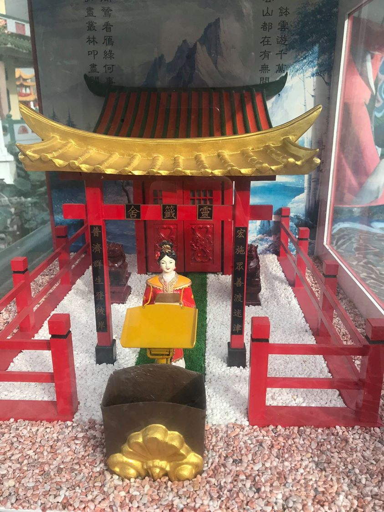
Jedna z pagod na Lotosovém jezeře.
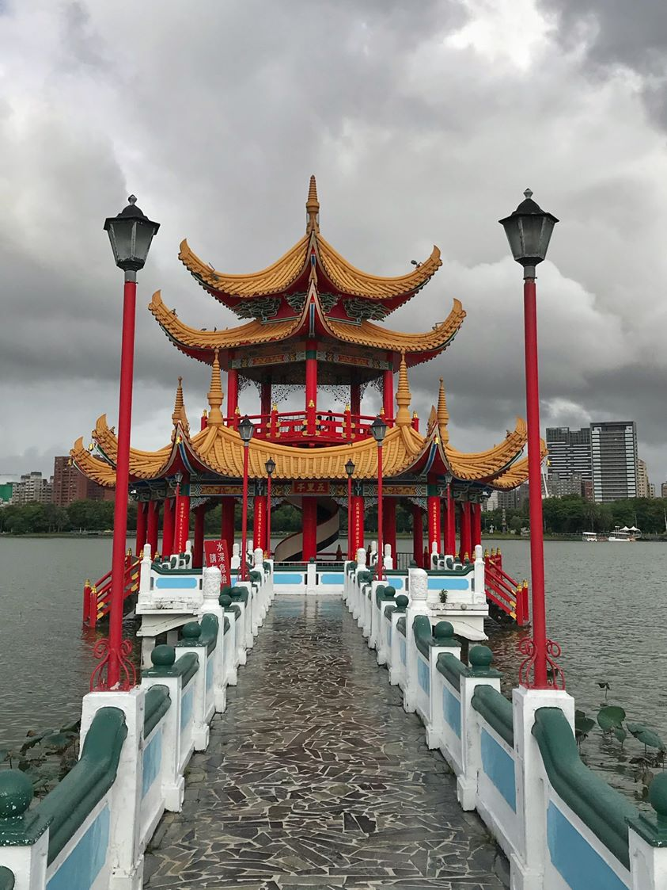
Uvnitř jednoho z buddhistických chrámů.
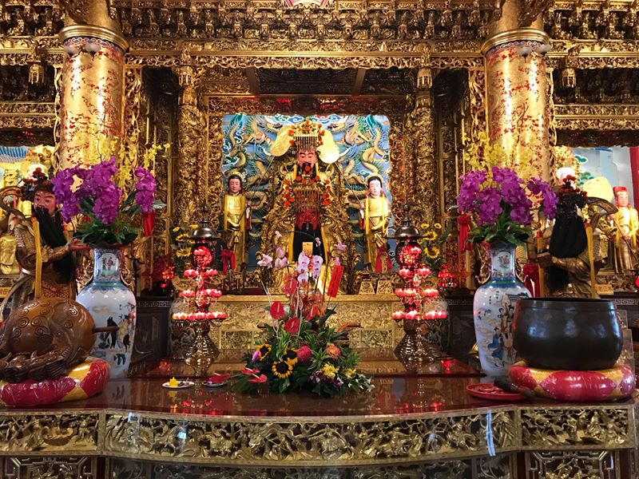
Pavilon Pei Chi s nejvyšší vodní sochou v JV Asii.
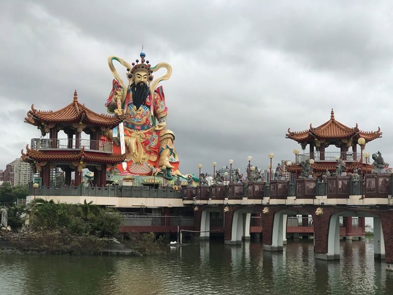
72 metrů vysoká socha Guan Gong.
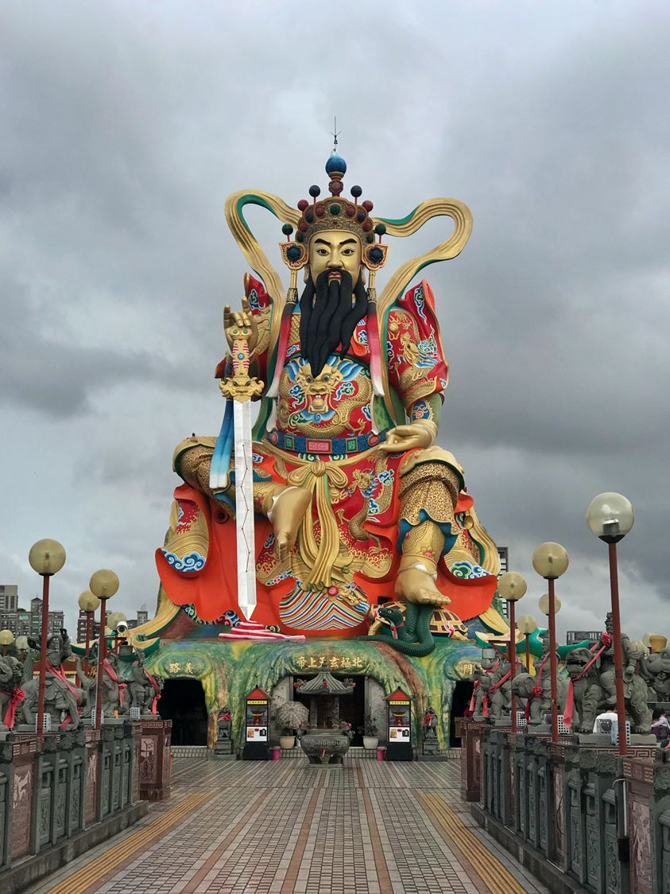
Později mě Steve vzal i do místní základní školy. Takhle vypadá vstup do tchajwanské základky.
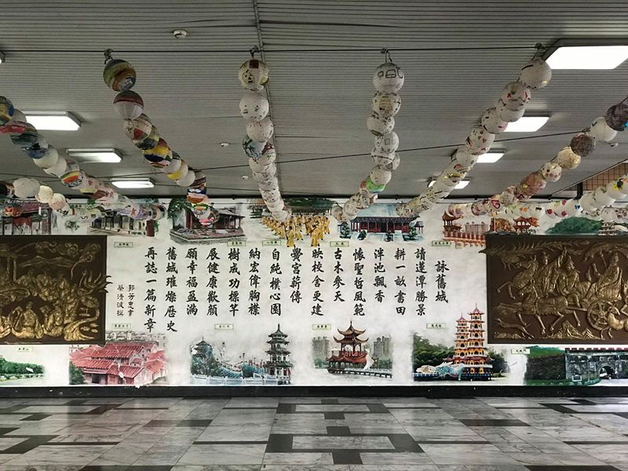
Dětská socha Konfucia v areálu školy.
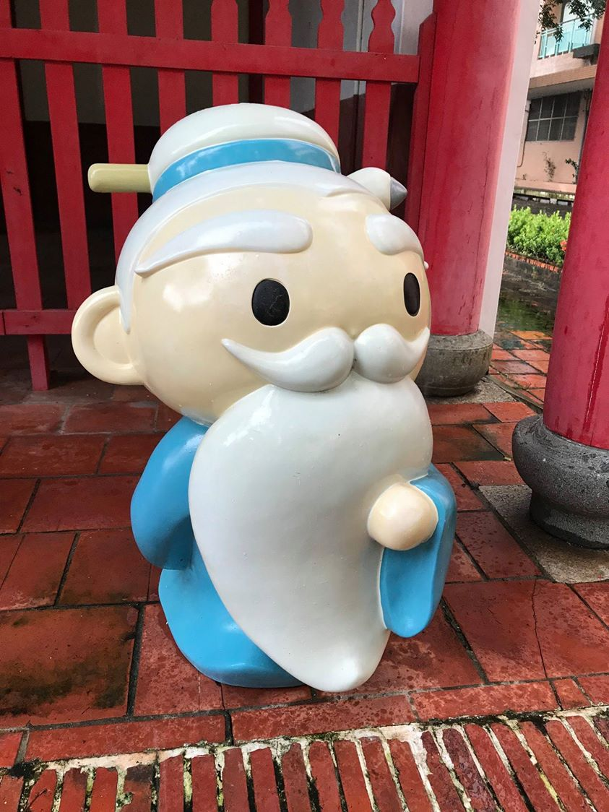
Ale zpět k výletu. Třetí den ráno jsem se přesunul na jih ostrova, přibližně 9 km od nejjižnějšího místa na Tchaj-wanu. Celý den mi vyskakovaly na telefonu notifikace o přívalových deštích. Když jsem odjížděl z Kao-siungu, v ulicích tekly potoky. Po následující dva týdny to bohužel nebude jiné, předpovědi se liší jen v tom, zda zobrazují “heavy rain”, nebo “extreme rain”. Bohužel se to ale posunout nedá, 睿 mě bude na konci čekat a Číňané mohou na Tchaj-wan, Hong Kong a Macao jen s povolením. Ano, Češi mohou do Číny bez víza, ale Číňané do Číny vízum potřebuji. Takže nejpozději 16. září musí být v na nejsevernějším místě Tchaj-wanu.
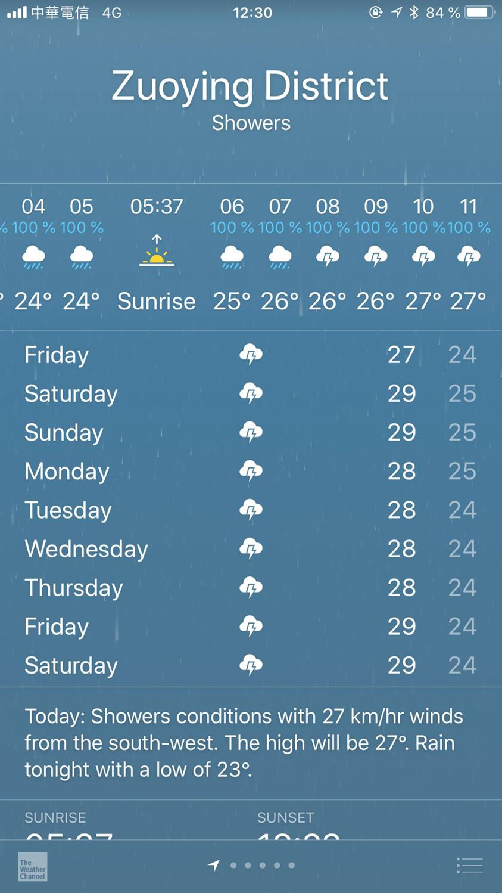
Na koupání to moc nevypadá, co? Takže zítra hned vyrážíme, insta stories zde: https://www.instagram.com/cekoturisto/.
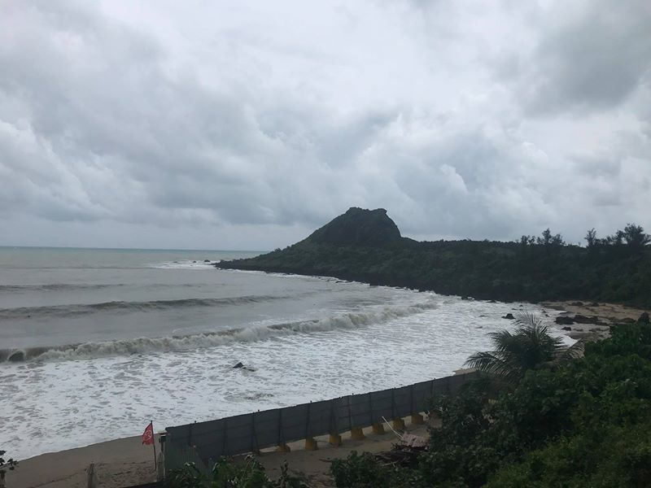